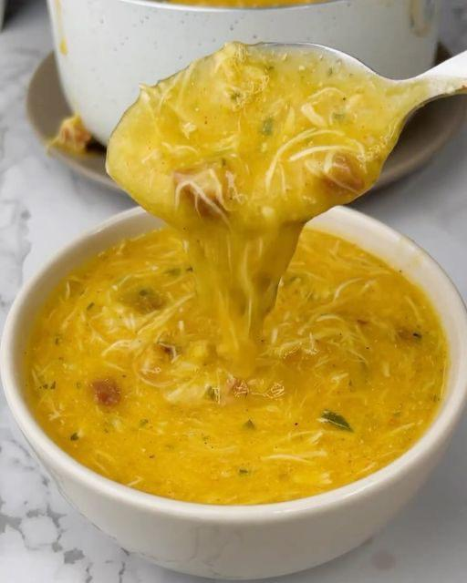
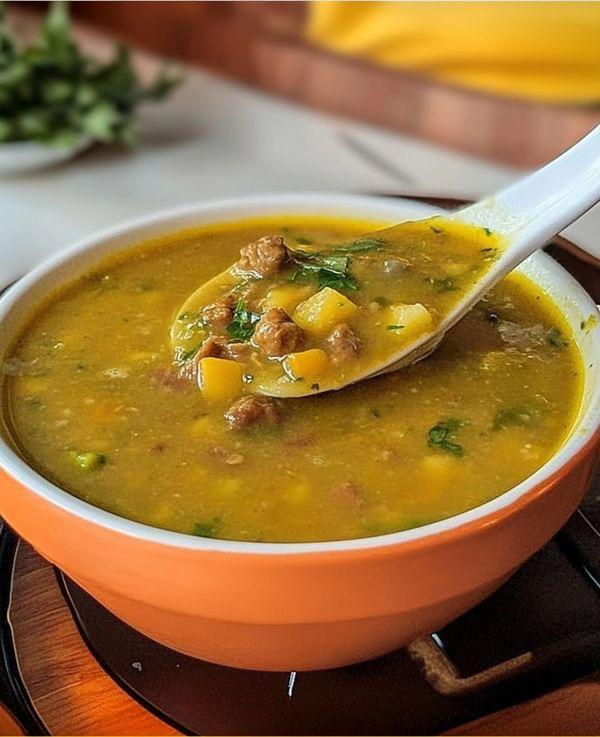
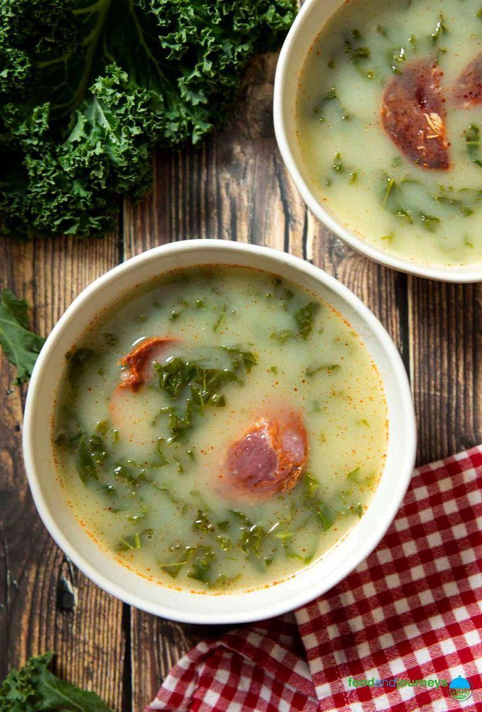

Caldos Artesanais
Caldos cremosos e saborosos para aquecer o coração em qualquer momento
Imagem meramente ilustrativa. Para saber mais sobre os produtos que estão saindo, siga o Instagram do @forja.do.sabor.
O que acompanha nossos caldos?
Todos os nossos caldos (500ml) acompanham uma experiência completa para aquecer seu coração:
Torradas Crocantes
Torradas fresquinhas e crocantes
Rodela de Limão
Para realçar o sabor do seu caldo
Sobremesa (145ml)
Uma deliciosa sobremesa para finalizar
Sabores Disponíveis
Caldos artesanais preparados com ingredientes frescos e muito carinho (500ml)

Frango Cremoso
Caldo cremoso de frango com temperos especiais, perfeito para aquecer o coração em qualquer momento do dia.

Carne Moída Temperada
Caldo encorpado com carne moída temperada com ervas e especiarias, uma explosão de sabor em cada colherada.

Caldo Verde
Tradicional caldo verde com couve refogada e temperos especiais, trazendo o sabor caseiro para sua mesa.
Imagem meramente ilustrativa. Para saber mais sobre os produtos que estão saindo, siga o Instagram do @forja.do.sabor.
Bebidas e Extras
Complemente sua experiência com nossos extras especiais